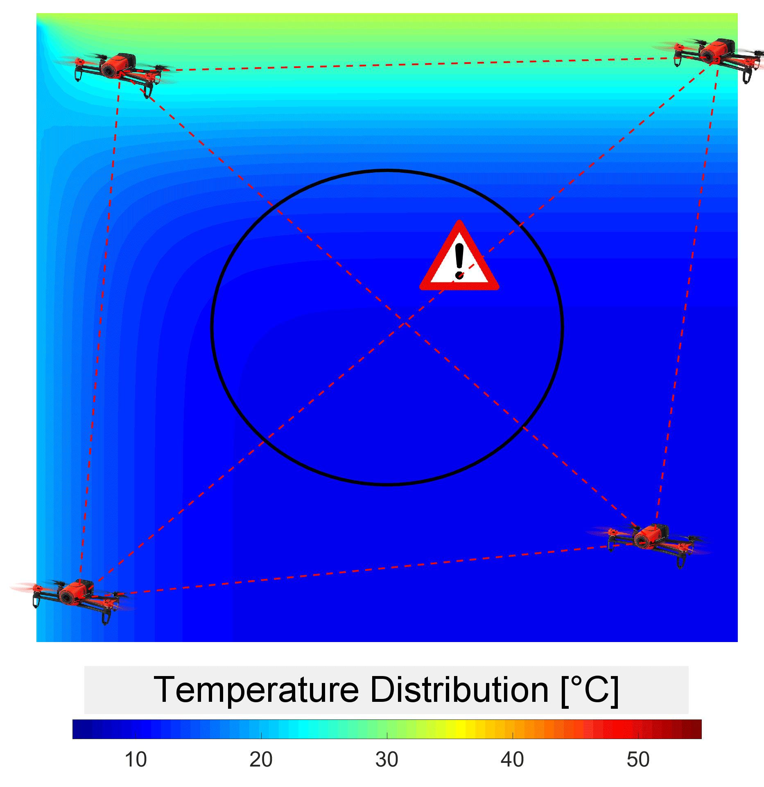
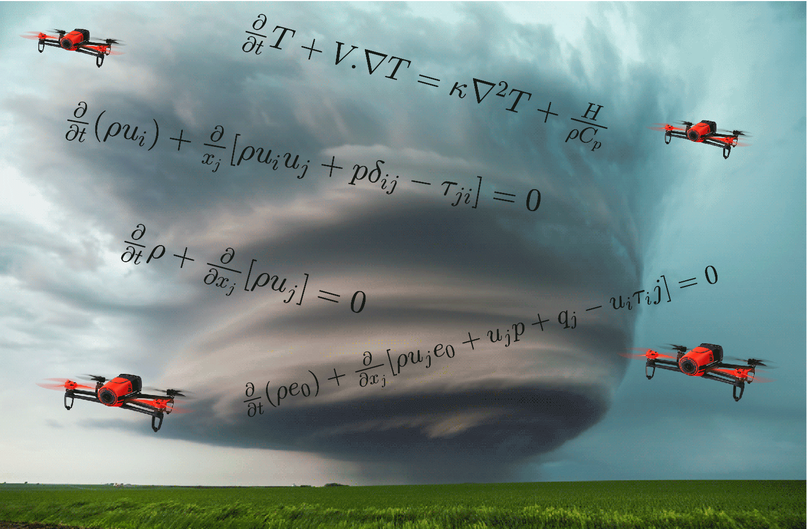
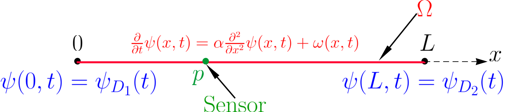
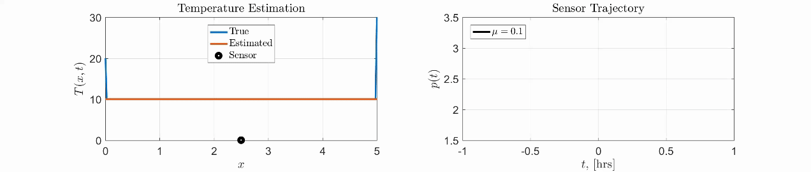
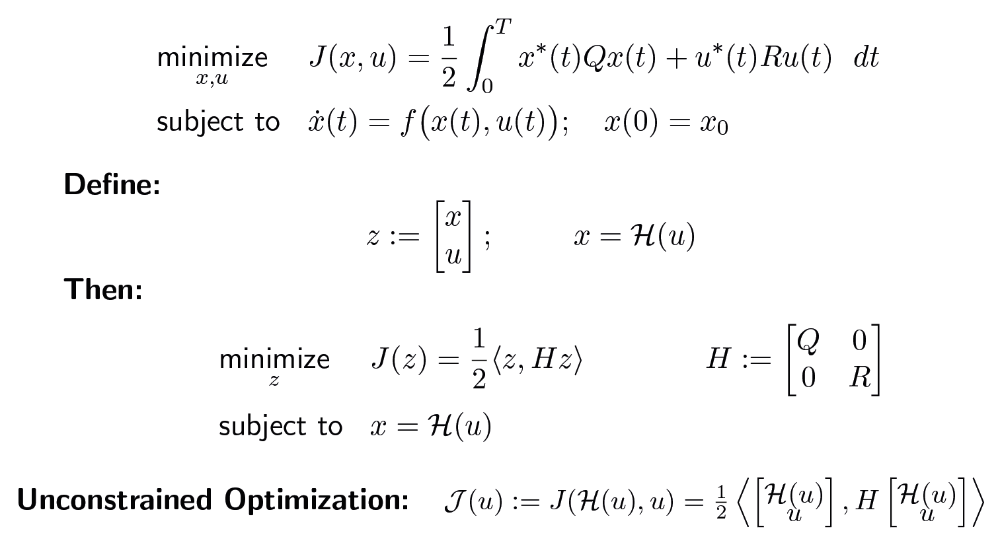
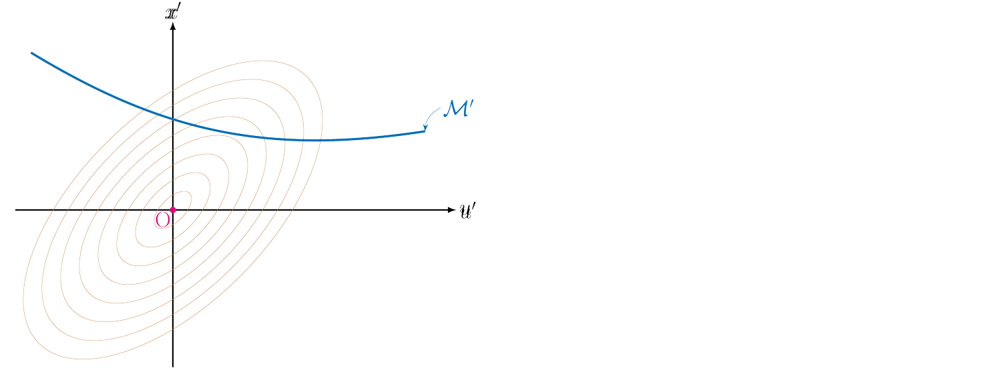
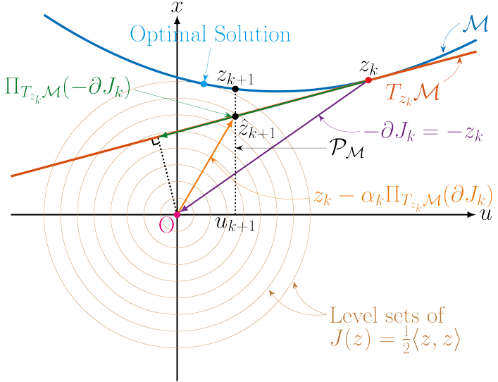

2017

Sensor Motion for Optimal Estimation in Distributed Dynamic Environments
American Control Conference (ACC), 2017
Research
 |
 |
We are interested in designing optimal sensor paths in environments modeled by two or three-dimensional fields, such as fluid flows, temperatures, or concentrations . Given scenarios where only a limited number of measurements are possible and parts of a physics-based model of the field are known, the goal is to enhance the solution of this highly underdetermined inverse problem with dynamic models. A stochastic settings is considered to acknowledge that the fields may be influenced by partially unknown disturbances and boundary conditions. We are interested in two types of sensors: (1) pointwise sensors capable of measuring the fields at a specific location and (2) standoff sensors such as tomographic sensors capable of measuring line integrals of the fields between two locations. Standoff sensors are particularly when the field of interest is inaccessible such as forest fires or other hazardeous regions.

Here is a simple toy example for the pointwise sensor where the goal is to estimate the temperature field on a rod with unknown boundary conditions. We compute the optimal trajectory of the single sensor to maximize the estimation accuracy.
 |
 |
Consider the standard optimal control problem. To view it abstractly in function space, we can proceed convert the dynamically constraint optimization into an unconstrained one:

Where \(\mathcal H\) represents the dynamical system, and the inner product is the standard \(L_2\) inner product. Next, one can apply the standard optimization methods such as gradient descent. However, to speed up the convergence without increasing the computational complexity, we adopt a different approach that keeps the cost function and the dynamic constraints separate. In fact our approach has two key ideas. First, the state-input space is transformed to have circular level sets. In the transformed space, the H matrix becomes the identity, and the dynamical constraint depicted by the manifold \( \mathcal M\) is transformed to \(\mathcal M'\).

The second key idea is to do two different projections sequentially: first project the negative gradient direction onto the tangent space of the manifold (represented by the linearization of the dynamics), and then project onto the manifold to force the dynamical constraints to be satisfied.

Step sizes of the projected gradient is taken at each iteration. The preconditioning transformation and the projections allow the iterative method to converge faster than a first order method without requiring the computational complexity of a second order method.
References:
American Control Conference (ACC), 2017
American Control Conference (ACC), 2018